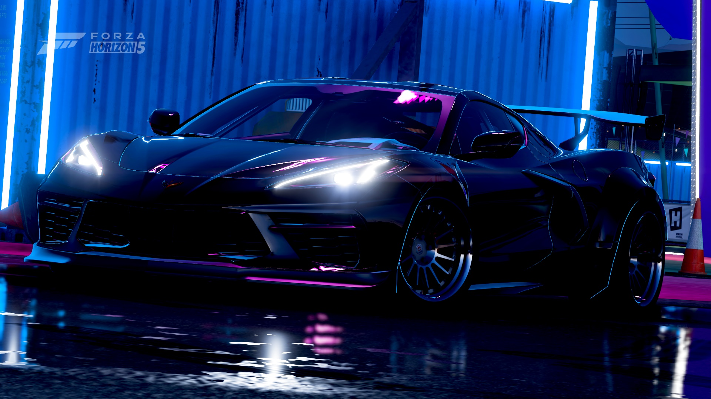
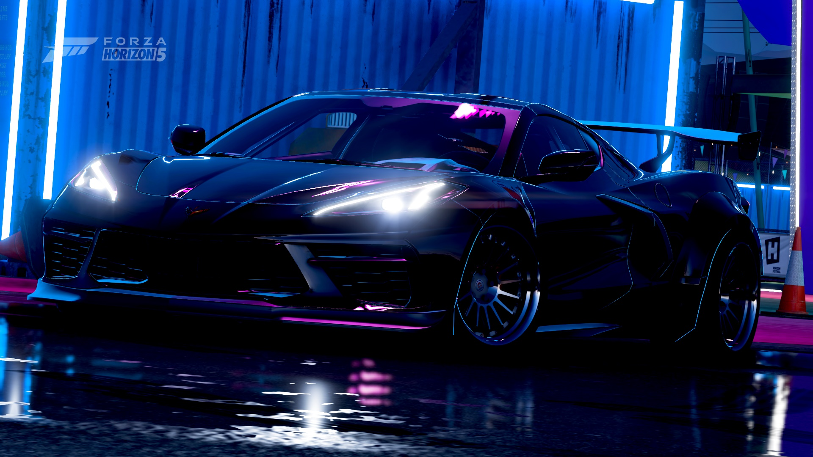
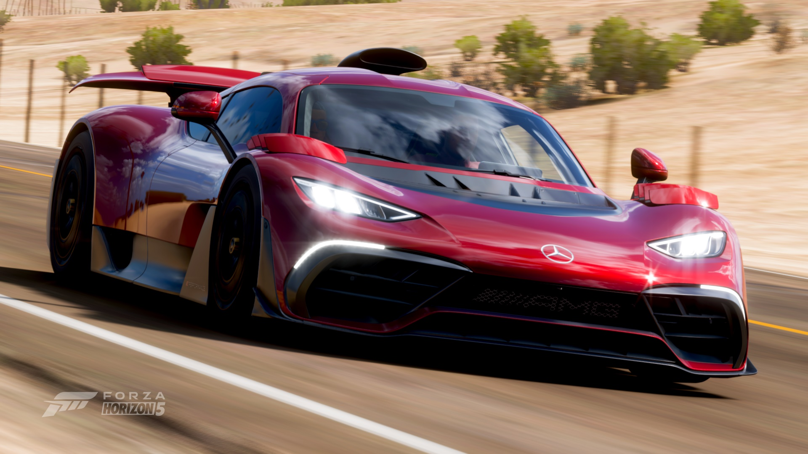
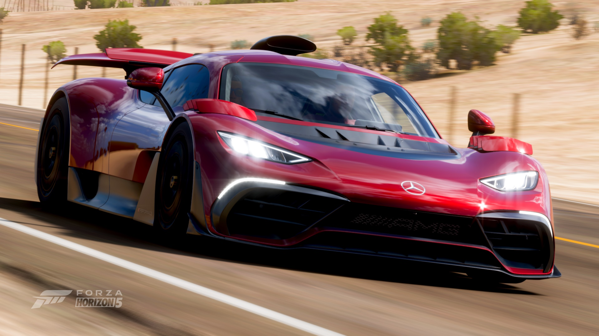

Evan Mao
Programmer, Musician, Canadian
My interests and passions include programming, playing classical music on piano and trombone, and playing Geometry Dash and Minecraft in my free time! I also enjoying socializing with friends, meeting new people, and keen to learn new things!
Get in touch with me at evanzmao@gmail.com! Check out my resume here!
Projects
Below are some fun projects related to my passions I have worked on!
Wordle (Evan Mao Version)
"Chopin Liszt" Discord Bot
My Youtube Channel
< insert random video from OfficialBLooms here >
My Twitch Channel
Skills
Languages
- Java
- Python
- Java/TypeScript
- HTML/CSS
- C/C++
Frameworks
- React
- Node.js
- PyMongo
Developer Tools
- Git
- VS Code
- Visual Studio
Photo Gallery
Husky Marching Band at the PAC-12 Championship

I am a member of the Husky Marching Band in my university, and in 2023 our football team went to the PAC-12 Football Championship in Las Vegas, Nevada! It was an intense game, but we came through with the win! Here is a photo of me alongside my friends celebrating the win!
Conducting my High School's Wind Ensemble

Back in my senior year, I had the opportunity to conduct the last piece for my school's Wind Ensemble concert! I worked with my bandmates to prepare the piece, and share my musical knowledge with them to perform in front of 300+ people. It was a great experience and I enjoyed every moment of it! Here is a video of the performance!
Performing a piano concerto

Back in 2022, I won a local piano competition and performed Rachmaninoff's Second Piano Concerto with the Mukilteo Community Orchestra at a live concert attended by over 200 people! I collaborated with the conductor, Shaun Day, to ensure the performance would be spectacular. Click here to watch the full performance!
Forza Horizon 5 Gallery
I love cars, and I love photographing them as well! Unfortunately I do not own a $1+ million supercar
and
have no plans to
buy one anytime soon, but I do have lots in Forza Horizon 5! Here are some of my favorite cars I
have
taken photos of in the game!
(I will make this prettier soon probably hopefully)


 



 



Minecraft
minecraft


My Socials
Connect with me on other social media sites! active